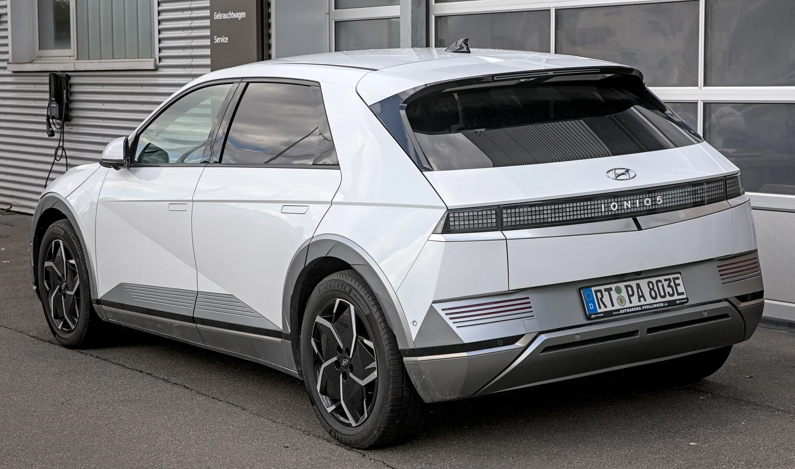

▲ 현대 아이오닉5. 800V 초급속 충전을 앞세워 국산 전기 SUV 시장을 이끌고 있다 ⓒ Alexander-93, Wikimedia Commons (CC BY-SA 4.0)
전기차를 알아보다 보면 결국 이 두 차 앞에서 고민이 끝나는 사람이 많습니다. 국내 수입 전기차 판매량 부동의 1위 테슬라 모델Y, 그리고 국산 전기 SUV를 대표하는 현대 아이오닉5입니다. 둘 다 출고가만 보면 5천만 원대부터 시작해 언뜻 비슷해 보이지만, 실제로 내야 하는 돈은 트림 구성과 보조금 계산 방식에 따라 크게 갈립니다. 여기에 충전 속도, 적재공간, 편의사양까지 따져보면 두 차의 성격은 생각보다 많이 다릅니다.
이 기사에서는 단순히 두 차종의 스펙을 나열하는 대신, "결국 얼마에 사는가"와 "어떤 사람에게 맞는가"라는 두 가지 질문에 집중해 실구매가와 선택 기준을 정리했습니다.
1. 트림별 가격 & 보조금 — 실구매가는 얼마나 벌어질까

▲ 테슬라 모델Y. 국내 수입 전기차 월간 판매 1위를 지키고 있는 스테디셀러다 ⓒ Chanokchon, Wikimedia Commons (CC BY-SA 4.0)
현대 아이오닉5는 2026년 6월 페이스리프트를 거치며 스탠다드 E-VALUE+ 4,740만 원부터 롱레인지 프레스티지 5,915만 원까지 5개 트림으로 운영됩니다. 테슬라 모델Y는 2026년 7월 가격 조정 이후 RWD(스탠다드) 5,699만 원, 롱레인지 AWD 약 6,499만 원, 최상위 L(7인승) 7,299만 원 선으로 형성돼 있습니다. 언뜻 아이오닉5가 전 구간에서 저렴해 보이지만, 실제 지갑에서 나가는 돈은 보조금을 더해봐야 정확히 비교할 수 있습니다.
| 구분 | 아이오닉5 | 모델Y |
|---|---|---|
| 보급형 | 4,740만 원(스탠다드 E-VALUE+) | 5,699만 원(RWD) |
| 중간 트림 | 5,064만~5,450만 원(롱레인지) | 약 6,499만 원(롱레인지 AWD) |
| 최상위 트림 | 5,915만 원(롱레인지 프레스티지) | 7,299만 원(모델Y L) |
현재 전기차 보조금은 차값 5,300만 원 미만이면 국고보조금을 100% 지급하고, 5,300만~8,500만 원 구간은 50%만 지급하는 방식입니다. 아이오닉5는 트림·옵션에 따라 국고보조금 483만~567만 원을 받는데, 특히 빌트인캠 미적용 롱레인지 2WD 19인치 사양이 567만 원으로 가장 높습니다. 반면 모델Y는 RWD가 5,300만 원 문턱을 살짝 넘어 50% 감액 구간에 걸리는 경우가 많아 국고보조금이 약 170만~210만 원 수준에 그칩니다. 여기에 지방자치단체 보조금까지 더하면 격차는 더 벌어지는데, 아이오닉5 롱레인지 익스클루시브 기준 지방보조금은 최소 174만 원(경기 부천)부터 최대 1,099만 원(경북 울릉)까지 지역별로 크게 차이 납니다.
| 항목 | 아이오닉5 롱레인지 | 모델Y RWD |
|---|---|---|
| 출고가 | 약 5,064만~5,450만 원 | 5,699만 원 |
| 국고보조금 | 최대 567만 원 | 약 170만 원 |
| 지방보조금(수도권 기준) | 약 174만~300만 원 | 약 100만~200만 원 |
| 실구매가(대략) | 약 4,300만~4,900만 원대 | 약 5,300만~5,500만 원대 |
정리하면, 국고보조금 산정 기준에서 아이오닉5가 명백히 유리한 위치에 있습니다. 다만 지방보조금은 지자체 예산 소진 여부와 거주지에 따라 실시간으로 달라지므로, 정확한 금액은 반드시 구매 시점에 무공해차 통합누리집(ev.or.kr)에서 확인해야 합니다. 모델Y 롱레인지·L처럼 8,500만 원에 근접하지 않는 트림은 여전히 50% 구간의 보조금을 받을 수 있다는 점도 참고할 부분입니다.
2. 배터리 · 주행거리 · 충전속도 — 승부는 '충전'에서 갈린다

▲ 아이오닉5 후면부. 800V 멀티 급속충전 시스템이 이 차의 핵심 무기다 ⓒ Alexander-93, Wikimedia Commons (CC BY-SA 4.0)
아이오닉5는 84.0kWh 대용량 배터리를 탑재해 롱레인지 2WD 19인치 기준 정부 인증 복합 주행거리 485km, 도심 기준으로는 최대 533km까지 나옵니다. 모델Y 롱레인지 AWD는 84.85kWh급 배터리로 환경부 인증 기준 약 523km를 기록해 순수 주행거리만 놓고 보면 두 차가 비슷한 수준에서 경쟁합니다.
하지만 급속충전 속도에서는 격차가 뚜렷합니다. 아이오닉5는 400V/800V를 자동으로 인식하는 멀티 급속충전 시스템을 갖춰 350kW급 충전기를 만나면 10%에서 80%까지 약 18분 만에 채울 수 있습니다. 반면 모델Y는 테슬라 슈퍼차저(최대 250kW) 기준으로 10%에서 80%까지 약 25~27분이 걸려, 같은 구간을 채우는 데 아이오닉5보다 눈에 띄게 오래 걸립니다. 장거리 이동이 잦고 고속도로 휴게소에서 충전 대기 시간을 최소화하고 싶다면 아이오닉5의 800V 구조가 실사용성에서 확실히 유리합니다.
| 항목 | 아이오닉5(롱레인지) | 모델Y(롱레인지) |
|---|---|---|
| 배터리 용량 | 84.0kWh | 약 84.85kWh |
| 1회 충전 주행거리 | 485km(복합) | 약 523km |
| 급속충전 시스템 | 400V/800V 멀티, 최대 350kW | 슈퍼차저, 최대 250kW |
| 10→80% 충전시간 | 약 18분 | 약 25~27분 |
다만 충전 인프라 접근성 측면에서는 모델Y가 유리한 면도 있습니다. 테슬라 슈퍼차저 네트워크는 고장이 적고 대기 시간이 짧다는 평가를 받아 온 만큼, 충전 속도 자체는 느리더라도 '어디서든 안정적으로 충전할 수 있다'는 신뢰도는 무시할 수 없는 요소입니다. 반대로 아이오닉5의 800V 초급속 충전을 온전히 누리려면 350kW급 충전기가 설치된 충전소를 찾아야 하는데, 아직 이런 초고출력 충전기는 수도권 일부와 고속도로 거점 위주로 깔려 있어 지역에 따라 체감 차이가 있을 수 있습니다.
3. 실내공간 · 적재공간 · 편의사양 — 짐칸은 모델Y, 실용성은 아이오닉5

▲ 모델Y 후면부. 트렁크와 프렁크를 합친 적재공간이 동급 대비 넉넉한 편이다 ⓒ Ethan Llamas, Wikimedia Commons (CC BY-SA 4.0)
적재공간만 놓고 보면 모델Y가 한 수 위입니다. 2열 좌석을 세운 상태에서 후면 트렁크 용량이 854L에 달하고, 전면부 프렁크 117L까지 더하면 실사용 적재공간이 상당히 넉넉합니다. 2열을 완전히 접으면 최대 2,138L까지 확장됩니다. 아이오닉5는 후면 트렁크 527L에 프렁크가 구동방식에 따라 2WD 57L, AWD 24L로 나뉘는데, 절대적인 수치로는 모델Y에 못 미칩니다.
반면 아이오닉5는 실용적인 편의 기능에서 강점을 지닙니다. 대표적인 것이 V2L(Vehicle to Load) 기능으로, 최대 3.6kW급 전력을 차량 안팎에서 뽑아 캠핑이나 야외활동, 비상시 가전제품 사용에 활용할 수 있습니다. 또한 평평한 바닥과 슬라이딩 콘솔 등 실내 구성이 국내 소비자 체형과 사용 패턴에 맞춰 설계됐다는 평가를 받습니다. 모델Y는 대형 중앙 디스플레이 하나로 대부분의 조작을 처리하는 미니멀한 인터페이스와, 무선 소프트웨어 업데이트(OTA)로 계속 기능이 추가되는 점이 특징입니다.
4. 선택 가이드 — 나에게 맞는 차는?
결국 선택은 '얼마를 아낄 수 있느냐'와 '무엇을 자주 쓰느냐'로 갈립니다. 보조금을 최대한 받아 실구매가를 낮추고 싶거나, 고속도로 휴게소에서 짧게 충전하고 다시 출발하는 장거리 이동이 잦다면 아이오닉5가 유리한 선택지입니다. 특히 지방보조금이 두터운 지역에 거주한다면 실구매가 차이는 더 크게 벌어질 수 있습니다.
반대로 짐이 많은 캠핑·차박, 넉넉한 적재공간, 테슬라 슈퍼차저의 안정적인 충전 경험, 지속적인 소프트웨어 업데이트로 차량이 계속 진화하는 느낌을 중시한다면 모델Y가 더 잘 맞습니다. 다만 모델Y는 국고보조금이 상대적으로 적어 출고가 대비 실구매가 절감폭이 아이오닉5보다 작다는 점은 감안해야 합니다.
두 차 모두 완성도 높은 전기차인 만큼 정답은 없습니다. 다만 "얼마에 사는가"를 기준으로 삼는다면 아이오닉5가, "무엇을 우선하는가"를 기준으로 삼는다면 각자의 라이프스타일이 답을 갈라줄 것입니다. 계약 전에는 반드시 거주지 지방보조금 현황과 최신 트림별 가격을 무공해차 통합누리집과 각 사 공식 홈페이지에서 다시 한번 확인하시길 권합니다.